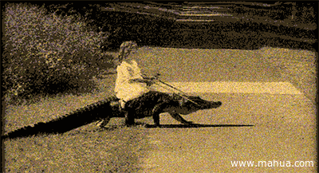
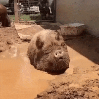

About Me
Hello, I am Nathan Wooddell,
I am a senior Computer science student here at University of Maryland - Baltimore County
Besides computer science, I am also studying Russian Language, and will recieve a certificate.
On campus I like to participate in several clubs, especially UMBC cyberdawgs, and the Russian club.
In my free-time I like to paint tabletop miniatures, play videogames, and 3D model/3D print.
And just so you know who I am I have included a picture of myself below!
Since we talk about games in class fairly often I think I'll share my favorite game: Escape from Tarkov. This is my favorite game, especially when I'm not actually playing it.
A final fact about me, is that I used to work as a night host at a summer camp. That was probably my favoite job to date.
Some Fun Facts
I used bootstrap in an attempt to make this page look better, and I think it almost worked.
Crocodiles can't stick their tounges out.

Pigs, when determined enough can actually fly.

Penguins can only see out of one eye.
Only one of these fun facts is actually true, but you can click the button below to see which one:

Some Other Fun Stuff
I wanted to give my website some music, but it seems that autoplay is disabled on chromium browsers,
so unfortunately I had to provide controls for the audio, and it doesn't just play. But anyway, I hope you
like the track concerning hobbits from the opening to the movie adaptaiton of "The Fellowship of the Ring"
Originally my embed was working, but now it's not. It still works if you click on it.
There is another page for this webpage, to see it click : HERE!